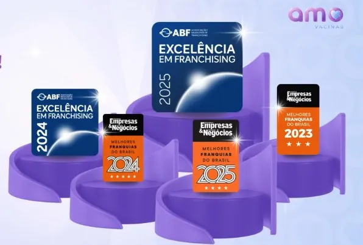

Ambiente lúdico
Clínicas temáticas e acolhedoras que encantam crianças e conquistam famílias.
Faturamento de R$ 100 a 120 mil já nos primeiros 6 meses e média de R$ 3,2 milhões ao ano por unidade madura, em um mercado essencial que não para.
Números divulgados pela rede. Resultados variam conforme praça e operação.
Um modelo premium, lúdico e validado, pensado para gerar resultado e cuidar de pessoas.
Clínicas temáticas e acolhedoras que encantam crianças e conquistam famílias.
Método exclusivo que reduz em até 94% a percepção de dor na aplicação.
Atendimento ativo que acompanha a longevidade e a saúde de toda a família.
Ticket médio alto e receita recorrente com planos de vacinação.
Enfermagem treinada no padrão técnico e de acolhimento da rede.
Plano de vacinação individual para cada fase da vida do cliente.
Rede ativa que troca experiências e cresce em conjunto.
Formação técnica, operacional e de gestão do primeiro dia em diante.
O modelo da Amo Vacinas é auditado e premiado pelas principais instituições de franchising do país.

Veja como a rede opera e transforma saúde preventiva em um negócio com propósito.
O que muda quando você abre com uma rede validada em vez de começar do zero.
| Critério | Franquia Amo | Independente |
|---|---|---|
| Força de marca | Forte e reconhecida | Começa do zero |
| Faturamento nos primeiros 6 meses | R$ 100 a 120 mil | R$ 20 a 30 mil |
| Ponto de equilíbrio | Cerca de 6 meses | Cerca de 18 meses |
| Preço de compra de vacinas | Baixo, com poder de grupo | Alto |
| Treinamento científico | Sim | Não |
| Treinamento de vendas | Sim | Não |
| Consultorias mensais | Sim | Não |
| Acompanhamento de resultados | Completo | Não há |
| Experiência lúdica padronizada | Padrão da rede | Não existe |
| Protocolo Dor Zero | Exclusivo | Inexistente |
| CMV médio | 45 a 50% | 60 a 70% |
| Ticket médio | Alto | Baixo |
Quatro modelos de operação para diferentes perfis de ponto e investimento.
Maior ticket médio, mix completo de serviços e alta visibilidade de marca.
Fluxo constante de famílias e conveniência de estacionamento e segurança.
Operação enxuta dentro de estabelecimentos parceiros de saúde.
Vacinação em casa, com conforto e segurança para toda a família.
A porta de entrada é o público infantil: mais de 70% das vacinas aplicadas na rede. O ambiente lúdico encanta as crianças e fideliza a família inteira, de gestantes a idosos.
"Um negócio que cuida de pessoas e gera prosperidade."
O que as famílias dizem sobre as unidades da rede.
Gosto de levar meu filho na Amo. A experiência é tranquila e cheia de carinho, do início ao fim.
Como pediatra, indico a Amo. É um padrão de excelência raro no Brasil, técnico e humano ao mesmo tempo.
Levei minha mãe de 78 anos e trataram ela com tanto respeito e carinho que ela saiu emocionada.
A rede oferece mais de 30 tipos de vacinas da iniciativa privada, além de colocação de brincos, aplicação de medicamentos com prescrição e serviços de enfermagem.
Depende do modelo: em shopping, entre 40 e 55 m²; na rua, a partir de 50 m². O time de expansão ajuda a avaliar o ponto da sua cidade.
Em média, de 60 a 90 dias após o início das intervenções no ponto.
Não. Não há exigência de aprovação prévia por parte da Anvisa; a rede orienta todo o processo de licenciamento sanitário local.
No mínimo 1 enfermeiro como responsável técnico. Clínicas de rua costumam operar com mais 2 técnicos; em shopping, de 2 a 3 técnicos.
A rede conta com 3 a 5 fornecedores de excelência homologados, com entrega em 24 a 48 horas. As câmaras frias possuem baterias internas que mantêm a temperatura por 48 a 72 horas, sem necessidade de gerador externo.
Preencha os dados e fale agora com o time de expansão pelo WhatsApp, sem compromisso.
Sem compromisso. Resposta rápida. Sem spam.